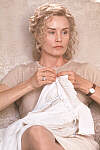
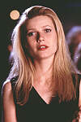
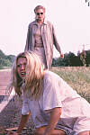

In 1942, Philip Wylie, a social critic now almost forgotten except to historians, set forth some extremely acidulous observations (some might call them a diatribe), about a new sort of disease that he called "momism". Like every other "ism" in the book, this one’s perniciousness was apparent, but only if one cared to remove certain psychological blinders. "Momism" might best be described as the disease contracted by married women with too much time on their hands and insufficient common sense. More simply, it was the accusation, directed by Wylie at a group of contemporary mothers, that they were living through their children to a degree that was, to say the least, obsessive. Under the guise of caring for their children, these mothers would attempt to run (and ruin) their children’s lives. Their technique was so stealthy that the children would have a difficult time mustering up sufficient evidence to prove any case. This paradox of malevolent maternal nurturing is now seized upon by feminist historians as a justification for the so-called "repressive" domestic-angel model of 1950s womanhood (the twin shocks of economic depression and war, followed by an urge toward normality at any price being the initial trigger).

Perhaps it should be suggested that Wylie’s model was only half-forgotten. In the new film, Hush, the audience is treated to the logical outcome of Wylie’s Exhibit "A" of motherhood run amok. Meet Martha Baring (Lange), a woman of means who owns and operates Kiloran, her very own little horse-breeding farm (which looks suspiciously like a slightly smaller version of Jefferson’s Monticello). The Widder Baring has a son, Jackson (Schaech), who is, to say the least, the apple of his mother’s ever-attentive eye. Unfortunately, maturity and hormones have conspired to place a worm in Martha’s paradise: her son has fallen in love with Helen (Paltrow), an attractive young woman with no past at all (her parents died when she was very young). By contrast, and befitting a prosperous Southern family, the Baring family possesses the requisite scandal that never quite manages to stay buried. It seems that Papa Baring died when Jackson was seven, under fairly mysterious circumstances, leaving the young man to his mother’s smothering care. His escape to New York, and his love for Helen, is a little more than Mom can tolerate, especially since Sonny refuses to do his duty and come back to run the family business.Fortunately for Martha, a series of conveniently-timed events (Helen’s unforeseen pregnancy, a nasty assault upon her in the couple’s apartment, and her marriage to Jackson,) brings the young couple back into Martha’s sphere of influence. But, soon, under the influence of Jackson’s grandmother, Alice Baring (Foch), Helen begins to suspect that the molasses-thick charm displayed by Martha has a consistency similar to that of Krazy Glue. Martha begins by disrupting the intimacy between husband and wife, and moves on to more overt threats against her daughter-in-law. Being the considerate soul that she is, Martha even offers Helen a nice, surreptitiously-administered dose of oxytocin to hasten the arrival of a grandchild into the world, and threatens to offer Helen far more.
Upon seeing Hush, the first temptation that comes to mind is to relate the ridiculously-scripted antics and hilariously-overheated melodramatic atmosphere within to a fifth-rate version of a Tennessee Williams play, because both Hushand most of Williams’ best-known works, such as Cat on a Hot Tin Roof , offer up common elements, most notably the Southern family on the verge of disintegration with the mad matriarch, or would-be matriarch, at its helm (indeed, Lange, having played Maggie the Cat on Broadway and for television, is intimately acquainted with this sort of desperate, rebellious woman on the edge who is trapped within conventions and has everything and nothing to lose all at once).

But Hushdoesn’t have the emotional complexity that raises a Williams play above its hyperbolic plot mechanics, an obvious fault that first-time director and co-writer Darby should have realized from the start. As with the latest remake of Great Expectations, we are instead back in the realm of Robert Aldrich’s 1960s psychodramas (Whatever Happened to Baby Jane?, Hush, Hush, Sweet Charlotte) where refugees from the then-recently defunct studio system, such as Crawford and Davis, could rework their old on-screen personas for all they were worth until they were so wrung out from overuse that they descended into camp. You could take the performances straight, if you so desired, but there was so little depth contained therein that the real entertainment came from surveying them from an extra-textual perspective. There was something perversely thrilling about watching Charlotte, for example, and seeing the once-almighty Davis in a state of utter psychological disrepair (akin to watching a car wreck), after having been worked over by villains Joseph Cotten and Olivia De Havilland (in fact, the horrific birthing sequence in Hush shares more than a few common elements with a similar scene in Charlotte, in which De Havilland, having worked her final act of outrage upon the mentally-fragile Charlotte, commences to "soothe" her victim with a nasty sneer on her face).So it is with Hush. You don’t watch this film to obtain deeper insight into dysfunctional parenting, and you don’t do so in order to observe the chemistry between Paltrow and Schaech, because there isn’t any worth mentioning; in fact, their relationship is the most dishonest aspect of the entire film, lacking as it does any real semblance of passion (the conception of Helen and Jackson’s child had to have been of the immaculate variety, for all of the sexual gymnastics they are obliged to undertake to impress upon their audience how much in love they are) No, you go to this film in order to watch the wonderfully-choreographed catfight between old pros Foch and Lange, and to watch Lange perform a most glorious act of self-immolation upon her old, serious roles, such as her Oscar-nominated turn as Frances Farmer in 1982. Lange puts her foot upon that performance and pulls it inside out for this film, turning the victimizer-as-victim into the victim-as-victimizer in the process.
Yet, for all of her character’s vicious tendencies, Lange is careful not to let the role lead her too far off the edge of sanity too soon. She doles out the ever-revelatory clues to her character with the skill of a Vegas blackjack dealer, and just often enough to keep the film from descending completely into the realm of the moribund. Lange skillfully integrates the overblown aspects of Martha’s characterization with her obsessive regard for her Catholic faith and turns the combination into a mad, emotional light show (although many devout Catholics will probably not appreciate the film’s treatment of their religion as a quasi-mystical refuge for the emotionally disturbed).

She is also ably assisted by some of the most God-awful, unintentionally funny dialogue written for a film scenario of late (a dubious achievement in at least several seasons of bad movie dialogue). When Martha tells Helen , with a tenderly sinister hiss in her voice, that she must bring a child into the world without benefit of painkillers, so that Helen will know what loving a child really means, thereby making herself the update to the Genesis command that Eve must bring forth her children in pain and sorrow as punishment for her crimes, the audience sees Martha completely unhinged. As this most bitchy of domestic deities, Lange saves everything for the final showdown, which lacks any semblance of logic and/or credibility, but does wonders for the entertainment factor (even Paltrow finally gets into the action and raises the ante). The old joke about Mother being able to take your life because she gave you life hasn’t had this sort of shamelessly self-conscious and sardonic manifestation in a long time. Unfortunately, this inability to play things in a convincingly-straight manner will probably condemn Hush to a short release life, but it has great potential to become an after-market cult classic.